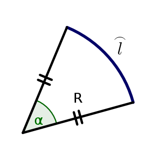
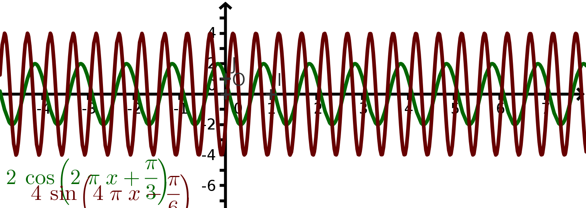

Fonctions sinus et cosinus, signal sinusoïdal : Rappels
Le radian
Étant donné un arc de cercle \(\overset{\frown}{l}\) de longueur \(l\) et de rayon \(R\),
la mesure en radians de l'angle \(\widehat{\alpha}\) est :
\(\alpha=\frac{l}{R}\)

Les mesures en degré et radians sont proportionnelles : \(180^\circ=\pi\) rad.
Le cercle trignométrique
Dans un repère orthonormé, le cercle trigonométrique est le cercle qui a pour centre le centre du repère et qui est de rayon 1.
Le périmètre de ce cercle est donc \(2\pi R=2\pi\times1=2\pi\).
On repère un angle orienté \(\alpha\) par rapport à l'axe \((Ox)\), en marquant un point \(M\) sur le cerle trigonométrique ;
si \(\alpha\) est positif, on tourne dans le sens direct (sens inverse des aiguilles d'une montre ; s'il est négatif, on tourne dans le sens indirect ;
on lit alors les valeurs :
de \(\cos\alpha\) sur l'axe \((Ox)\) : c'est l'abscisse de \(M\) ;
et celle de \(\sin\alpha\) sur l'axe \((Oy)\) : c'est l'ordonnée de \(M\).
Si l'on ajoute \(2\pi\) à \(\alpha\), on fait un tour du cercle et on revient à la même position, donc on obtient les mêmes valeurs pour \(\cos\) et \(\sin\) : les fonctions \(\cos\) et \(\sin\) sont donc \(2\pi\)-périodiques.
Graphes de \(\cos\) et \(\sin\)
Propriétés
Pour \(x\) réel :
\(\cos\) est paire et \(\sin\) est impaire ;
\(-1\leqslant\cos x \leqslant 1\) et \(-1\leqslant \sin x\leqslant 1\) ;
\(\cos^2 x+\sin^2 x=1\) ;
\(\cos\left(\frac{\pi}{2}-x\right)=\sin x\) et \(\sin\left(\frac{\pi}{2}-x\right)=\cos x\)
Formules d'addition : \(a\), \(b\) sont deux réels :
Une fonction du temps de la forme \(f(t)=A\cos\left(\omega t+\phi\right)\) ou \(g(t)=A\sin\left(\omega t+\varphi\right)\) s'appelle signal sinusoïdal d'amplitude \(A\), de pulsation \(\omega\) et de phase à l'origine \(\varphi\).

Le graphe du signal est le même que les fonctions \(\sin\) et \(\cos\) vues précedemment, mais il oscille entre les valeurs \(\pm A\) au lieu de \(\pm1\) et n'est plus \(2\pi\)-périodique :
On a \(\omega=\displaystyle\frac{2\pi}{T}=2\pi F\) où \(T\) est la période du signal et \(F=\frac{1}{T}\) sa fréquence.
Trois signaux triphasés (équilibrés) ont même amplitude, même fréquence et sont déphasés de \(\frac{2\pi}{3}\) :
Parité, périodicité et application aux intégrales : Rappels
Remarquer une (im)parité permet de restreindre l'étude d'une fonction à \(\left[0;+\infty\right[\), c'est à dire diviser le travail par 2 !
Fonctions paires
Une fonction définie sur un ensemble symétrique par rapport à \(0\) (par exemple \([-10;10]\)) est dite paire lorsque pour tout nombre \(x\) on a :
\(f(-x)=f(x)\)
Graphiquement, dans le plan muni d'un repère orthogonal, sa courbe représentative est symétrique par rapport à l'axe \((Oy)\) (deux points de la courbe ayant des abscisses \(x\) et \(-x\) opposées ont la même ordonnée puisque \(f(-x)=f(x)\)).
La fonction \(\cos\), (cf partie précédente), est paire.
La fonction carré est paire.
Intégration sur un intervalle de longueur \(T\) :
Si \(f\) est paire (et intégrable) :
\(\int_{-a}^a \, f(x)\,\textrm{d}x=2\int_0^a \,f(x)\,\textrm{d}x\)
Fonctions impaires
Une fonction définie sur un ensemble symétrique par rapport à \(0\) est dite impaire lorsque pour tout nombre \(x\) on a :
\(f(-x)=-f(x)\)
Graphiquement, sa courbe représentative est symétrique par rapport au centre du repère (deux points de la courbe ayant des abscisses \(x\) et \(-x\) opposées ont des ordonnées opposées puisque \(f(-x)=-f(x)\)).
La fonction \(\sin\), (cf partie précédente), est impaire.
La fonction cube est impaire.
Intégration sur un intervalle symétrique \([-a;a]\) :
Si \(f\) est impaire (et intégrable) :
\(\int_{-a}^a \, f(x)\,\textrm{d}x=0\)
Périodicité
Soit \(T>0\) un réel fixé.
Une fonction \(f\) est dite \(T\)-périodique ou périodique de période \(T\) lorsque pour tout \(x\) dans l'ensemble de définition de \(f\), on a aussi \(x+T\) est aussi dans l'ensemble de définition de \(f\) et :
\(f(x+T)=f(x)\)
Graphiquement, la courbe de \(f\) présente un motif qui est invariant par déplacement horizontal de \(T\).
Cette fonction est \(2\)-périodique :
On peut alors restreindre à un intervalle de longueur \(T\) (la période) l'étude de la fonction.
Comme dans le cas d'un signal sinusoïdal,
On appelle fréquence \(f\) l'inverse de la période : \(f=\frac{1}{T}\).
On appelle pulsation le nombre \(\omega=2\pi f=\frac{2\pi}{T}\).
Intégration sur un intervalle symétrique \([-a;a]\) :
Si \(f\) est \(T\)-périodique (et intégrable), toutes les intégrales de \(f\) sur des intervalles de longueur \(T\) ont même valeur :
\(\int_{-\frac{T}{2}}^\frac{T}{2}\, f(x)\,\textrm{d}x=\int_{a}^{a+T} \, f(x)\,\textrm{d}x\)
On choisit en général l'intervalle \(\left[-\frac{T}{2};\frac{T}{2}\right]\) comme intervalle d'intégration ; en effet, celui-ci étant symétrique par rapport à \(0\), on peut profiter des propriétés de parité s'il y a lieu.
Signaux à tracer :
Tracer, ci-dessous, sur au moins deux périodes, les signaux dont les caractéristiques sont données ci-après :
\(g\) est un signal pair et \(T\)-périodique défini sur \(\left[ 0;\pi \right]\) par
\(g(t)=\left|\begin{array}{l} \cos t \textrm{ sur } \left[ 0; \frac{\pi}{2}\right[ \\
0\textrm{ sur } \left[ \frac{\pi}{2} ; \pi \right] \\
\end{array} \right.\)
\(h\) est un signal impair et \(4\)-périodique défini sur \(\left[ 0; 2 \right]\) par
\(h(t)=\left|\begin{array}{l} 1 \textrm{ sur } \left[ 0 ; 1 \right[ \\
2-t \textrm{ sur } \left[ 1 ; 2\right] \\
\end{array} \right.\)
\(u\) est un signal pair et \(4\)-périodique défini sur \(\left[ 0; 2 \right]\) par \(u(t)=\left|\begin{array}{l} -t \textrm{ sur } \left[ 0 ; 1 \right[ \\
-1 \textrm{ sur } \left[ 1 ; 2\right] \\
\end{array} \right.\)
\(v\) est un signal impair et \(4\)-périodique défini sur \(\left[ 0; 2 \right]\) par
\(v(t)=\left|\begin{array}{l} 1-t \textrm{ sur } \left[ 0 ; 1 \right[ \\
0 \textrm{ sur } \left[ 1 ; 2\right] \\
\end{array} \right.\)
Présentation de la théorie
Fondamentale et harmoniques
Étant donné un signal sinusoïdal de fréquence \(F\), que l'on appelle (la) fondamentale, on appelle harmonique (sous entendu : du signal fondamental) tout signal sinusoïdal de fréquence un multiple entier de \(F\) (\(2F\) : harmonique de rang \(2\), \(3F\) : harmonique de rang \(3\), \(\ldots\))
Déterminer le signal fondamental et le rang de ses harmoniques tracées. Calculer la fréquence de chacun des trois signaux.
Que se passe-t-il si l'on ajoute ces trois signaux ?
la somme de signaux périodiques (pas forcément sinusoïdaux) n'est périodique que lorsque les rapports de leurs périodes sont rationnels (égaux à des fractions d'entiers) ; or, c'est bien le cas pour un signal fondamental et ses harmoniques (ici les rapports sont \(\frac{1}{2}\) et \(\frac{1}{3})\).
On obtient effectivement un signal périodique (de même période que le signal fondamental) :
Ce signal se rapproche d'une dent de scie. On pourrait imaginer qu'en ajoutant plus d'harmoniques, on arriverait à reconstituer un tel signal. Il faudrait aussi comprendre comment ajuster l'amplitude de chaque harmonique pour arriver au résultat escompté.
Un but des séries de Fourier est effectivement de reconstituer un signal périodique à partir de :
sa composante continue ;
sa fondamentale ;
ses harmoniques.
Le théorème de Dirichlet
On dit d'un signal \(f(t)\) \(T\)-périodique qu'il vérifie les conditions de Dirichlet si \(f\) est assez régulier (ce qui est toujours le cas en pratique), c'est à dire :
sur une période, en dehors d'un nombre fini de points, \(f\) est dérivable et sa dérivée est continue, et admet des limites à gauche et à droite en tout point ;
sur une période, \(f\) a un nombre fini de points de discontinuité et en chacun de ces points des limites à gauche et à droite ; la valeur de \(f\) en chaque point doit être la moyenne de ces limites à gauche et à droite.
Un signal Dirichlet-compatible :
C'est en fait un signal créneau «idéalisé». Observer les points médians aux discontinuités.
Soit \(f\) un signal \(T\)-périodique vérifiant les conditions de Dirichlet. Alors on a pour tout \(t\) : \(f(t)=a_0+\displaystyle\sum_{n=1}^{+\infty}\left[a_n\cos(n\omega t)+b_n\sin(n\omega t)\right]\)
Les constantes (algébriques : elles peuvent être négatives ou nulles) \(a_0\), \(a_1\), \(a_2\), \(\ldots\),\(b_1\), \(b_2\), \(\ldots\) sont appelés coefficients de Fourier de \(f\).
\(b_0\) n'existe pas (on peut éventuellement le considérer comme \(=0\)).
la fondamentale (\(n=1\)) et chaque harmonique (\(n\geq2\)) s'écrivent \(a_n\cos(n\omega t)+b_n\sin(n\omega t)\). Cette écriture tient compte des déphasages, pour information (hors programme) :
Dans une écriture sous la forme \(A_n\cos(n\omega t+\phi_n)\) on aurait :
\(A_n=\sqrt{a_n^2+b_n^2}\) et \(\left\{\begin{array}{l} \cos\phi_n=\frac{a_n}{A_n} \\ \sin\phi_n=\frac{-b_n}{A_n} \\ \end{array}\right.\)
Dans une écriture sous la forme \(B_n\sin(n\omega t+\phi_n)\) on aurait :
\(B_n=\sqrt{a_n^2+b_n^2}\) et \(\left\{\begin{array}{l} \cos\phi_n=\frac{b_n}{B_n} \\ \sin\phi_n=\frac{a_n}{B_n} \\ \end{array}\right.\)
Le théorème de Dirichlet nous donne une égalité sous forme de série (somme infinie) ; il reste à construire une méthode permettant de dire à partir de quel rang on peut «arrêter la somme» pour obtenir une approximation correcte du signal voulu à partir de sa fondamentale et ses premières harmoniques.
Calcul des coefficients de Fourier
Dans les paragraphes suivants, on considère un signal \(f(t)\) \(T\)-périodique satisfaisant les conditions de Dirichlet ;
les intégrales sont calculées sur \(\left[\frac{-T}{2};\frac{T}{2}\right]\), mais tout intervalle de longueur \(T\) (une période) convient aussi (\([0;T]\), \(\left[\frac{-T}{4};\frac{3T}{4}\right]\), \ldots).
Valeur moyenne \(a_0\)
Le coefficient \(a_0\) correspond à la valeur moyenne de \(f\) sur une période, c'est à dire la composante continue de \(f\) :\(a_0=\frac{1}{T}\int_{\frac{-T}{2}}^{\frac{T}{2}}\, f(t)\, \textrm{d}t\)
Fondamentale et harmoniques
Les deux cas se traitent simultanément, la fandamentale étant donnée par \(a_1\) et \(b_1\) ; pour \(n\) entier non nul, on a :
Le développement en série de Fourier de \(f\) ne contient que des \(\sin\). Justification : \(\left\{\begin{array}{l} f \textrm{ paire} \\ \cos \textrm{ paire} \\ \sin \textrm{ impaire} \\ \end{array}\right. \Rightarrow \left\{\begin{array}{l} f(t)\cos(n\omega t) \textrm{ paire} \\ f(t)\sin(n\omega t) \textrm{ impaire} \\ \end{array} \right.\)
et on utilise les propriétés intégrales sur les intégrales de fonctions paires et impaires
Calculer les coefficients de Fourier pour le signal créneau suivant, avec \(A=1\) et \(T=2\) :
Aide au calcul :
primitive de \(\cos(n\omega t)\) \(\rightarrow\) \(\displaystyle\frac{1}{n\omega}\sin(n\omega t)\)
primitive de \(\sin(n\omega t)\) \(\rightarrow\) \(\displaystyle\frac{-1}{n\omega}\cos(n\omega t)\)
retenir \(\omega T=2\pi\) ou \(\omega\frac{T}{2}=\pi\) ;
\(\cos(\pi n)=(-1)^n=\left|\begin{array}{l} 1 \textrm{ si }n\textrm{ pair} \\ -1 \textrm{ si }n\textrm{ impair} \\ \end{array} \right.\)
\(\sin(\pi n)=0\)
Synthèse additive
Théorème de Parseval
de Parseval
\[\frac{1}{T}\int_{\frac{-T}{2}}^{\frac{T}{2}}\, \left[f(t)\right]^2\, \textrm{d}t=a_0^2+\frac{1}{2}\sum_{n=1}^{+\infty} \left(a_n^2+b_n^2\right)\]
Interprétation :
à gauche de l'égalité, on reconnaît le carré de la valeur efficace (RMS) \(F_{\textrm{eff}}\) de \(f\) ;
à droite de l'égalité, le carré de la composante continue (qui, elle, est par définition égale à sa valeur efficace), suivi de \(\frac{1}{2}\displaystyle\sum_{n=1}^{+\infty} \left(a_n^2+b_n^2\right)=\displaystyle\sum_{n=1}\left(\left[\frac{a_n}{\sqrt{2}}\right]^2+\left[\frac{b_n}{\sqrt{2}}\right]^2\right)\), soit la somme des carrés des valeurs efficaces des harmoniques.
En physique, on écrirait donc :
\(F_{\textrm{eff}}^2=F_\textrm{cont}^2+\sum_{n=1}^{+\infty}F_{\textrm{harm}_n}^2\)
Le théorème de Parseval est une généralisation du théorème de Pythagore...
Application
Le théorème de Parseval peut nous aider à reconstituer un signal à partir de sa fondamentale et ses harmoniques : il nous fournit une méthode pour déterminer \(N\) tel que la somme
\(a_0+\displaystyle\sum_{n=1}^{N}a_n\cos(n\omega t)+b_n\sin(n\omega t)\)
nous donne une bonne approximation du signal de base \(f\) (on rappelle que d'après le théorème de Dirichlet, on retrouve \(f\) lorsque \(N\) tend vers l'infini).
On va utiliser la suite
\(S_N=a_0+\frac{1}{2}\displaystyle\sum_{n=1}^{N} \left(a_n^2+b_n^2\right)\)
qui tend en croissant (tous les termes sont positifs) vers \(\frac{1}{T}\int_{\frac{-T}{2}}^{\frac{T}{2}}\, \left[f(t)\right]^2\, \textrm{d}t\) lorsque \(N\) tend vers l'infini.
On peut calculer chaque terme à partir du précédent :
\(\left\{\begin{array}{l} S_N=S_{N-1}+\frac{1}{2}\left(a_N^2+b_N^2\right) \\S_0=a_0\\ \end{array}\right.\)
En affichant \(S_1\), \(S_2\), \(S_3\), \ldots , on détermine le rang \(N\) tels \(S_N\) dépasse un certain pourcentage de la valeur \(\frac{1}{T}\int_{\frac{-T}{2}}^{\frac{T}{2}}\, \left[f(t)\right]^2\, \textrm{d}t\) (par exemple 90% ; ce pourcentage doit être fixé ou donné à l'avance).
\(a_0+\sum_{n=1}^{N}\left[a_n\cos(n\omega t)+b_n\sin(n\omega t)\right]\) donne alors une bonne approximation de \(f\).
Phénomène de Gibbs
Malgré tout, on observera un sursaut d'environ 18% de l'amplitude au niveau des points de discontinuité, comme dans le cas de cette approximation d'un signal créneau, la somme allant jusqu'au rang N=250 :
N=10N=50N=250
Ce phénomène dit «de Gibbs» est visible sur la majorité des appareils de mesure, ceux-ci agissant comme des filtres coupant les harmoniques de haute fréquence.
En électricité
L'utilisation de charges non linéaires (chargeurs, transformateurs divers vers du courant continu) sur un réseau électrique produit des courants harmoniques ; le signal est donc déformé par ces harmoniques, ce qui produit des pertes de puissance et autres désagréments parfois dangereux. Un facteur de crête incorrect \(\left(\frac{I_\textrm{max}}{I_\textrm{eff}}\right)\neq\sqrt{2}\) doit faire soupçonner un signal déformé ; des mesures de THD donneront une idée plus globale de la déformation.
Adaptateur secteur coupable ?!
Problème type
On considère la fonction \(f\), périodique de période \(T\), dont une représentation graphique est donnée par la figure ci-dessous :
Le développement en série de Fourier de cette fonction \(f\) est noté : \(\displaystyle a_0+\sum_{a\geq1}\left[a_n\cos (n\omega t)+b_n\sin(n\omega t)\right]\)
Déterminer la période \(T\) de la fonction \(f\).
Déterminer la valeur moyenne \(a_0\) de la fonction \(f\).
Pour tout entier \(n\geq1\), on a \(b_n=0\).
Justifier cette affirmation.
Pour tout entier \(n\geq1\), on a \(a_n=\dfrac{4}{T}\int_0^\frac{T}{2}\,f(t)\cos(n\omega t)\,\textrm{d}t\).
Justifier cette affirmation.
On rappelle que \(a_n=\dfrac{4}{T}\int_0^\frac{T}{2}\,f(t)\cos(n\omega t)\,\textrm{d}t\)
Démontrer, en calculant, que pour tout \(n\geq1\), on a :
\(a_n=\dfrac{-4\sin\left(\dfrac{2\pi}{5}n\right)}{\pi n}\)
On rappelle que la valeur efficace \(f_{\textrm{eff}}\) de la fonction \(f\) est donnée par : \(f_{\textrm{eff}}^2=\dfrac{1}{T}\displaystyle\int_0^T \,\left[f(t)^2\right]\,\textrm{d}t\)
Démontrer que \(f_{\textrm{eff}}^2=2{,}4\)
On note \(S_n\) pour \(n\geq 1\) entier la somme : \(S_n=a_0^2+\dfrac{1}{2}\displaystyle\sum_{k=1}^n a_k^2\)
Le tableau suivant contient des valeurs approchées à \(10^{-2}\).
Compléter le tableau suivant :
\(\begin{array}{|l||c|c|c|c|c|}\hline
n &1 &2 &3 &4 &~~5~~~ \\ \hline
a_n &-1{,}21&-0{,}37&~0{,}25~~&~0{,}30~~&~~~0~~~~ \\ \hline
a_n^2 &1{,}46 &0{,}14 &~0{,}06~~&~0{,}09~~&~~~0~~~~ \\ \hline
%S_n &2{,}16 &2{,}23 &2{,}26&2{,}31 &2{,}31 \\ \hline
S_n &2{,}16 & &2{,}26& & \\ \hline
\end{array}\)
Déterminer le plus petit entier \(n\) tel que \(S_n\geq0{,}95f_{\textrm{eff}}^2\).
Exemples
Tous les signaux présentés sont de période \(T\) et d'amplitude \(A\).
Signal
Valeur efficace (offset=0 ou B)
Coefficients de Fourier
Spectre
sinusoïdal
\(\displaystyle\frac{A}{\sqrt{2}}\)
\(\sqrt{\displaystyle\frac{A^2+2B^2}{2}}\)
\(a_0=0\textrm{ ou }B\)
\(a_n=0\)
\(b_n=\left\{\begin{array}{l}
A \textrm{ si } n=1 \\
0 \textrm{ si } n\geq2 \\
\end{array}\right.\)
triangulaire
\(\displaystyle\frac{A}{\sqrt{3}}\)
\(\sqrt{\displaystyle\frac{A^2+3B^2}{3}}\)
\(a_0=0\textrm{ ou }B\)
\(a_n=0\)
\(b_n=\left\{\begin{array}{l}
0 \textrm{ si } n=0;4;8;\ldots \\
\frac{8A}{\pi^2n^2} \textrm{ si } n=1;5;9;\ldots \\
0 \textrm{ si } n=2;6;10;\ldots \\
\frac{-8A}{\pi^2n^2} \textrm{ si } n=3;7;11;\ldots \\
\end{array}\right.\)
dent de scie
\(\displaystyle\frac{A}{\sqrt{3}}\)
\(\sqrt{\displaystyle\frac{A^2+3B^2}{3}}\)
\(a_0=0\textrm{~ou~}B\)
\(a_n=0\)
\(b_n=\left\{\begin{array}{l}
\frac{-2A}{\pi n} \textrm{ si } n \textrm{ pair} \\
\frac{2A}{\pi n} \textrm{ si } n \textrm{ impair} \\
\end{array}\right.\)
créneau
\(A\)
\(\sqrt{A^2+B^2}\)
\(a_0=0\textrm{ ou }B\)
\(a_n=0\)
\(b_n=\left\{\begin{array}{l}
0 \textrm{ si } n \textrm{ pair} \\
\frac{4A}{\pi n} \textrm{ si } n \textrm{ impair} \\
\end{array}\right.\)